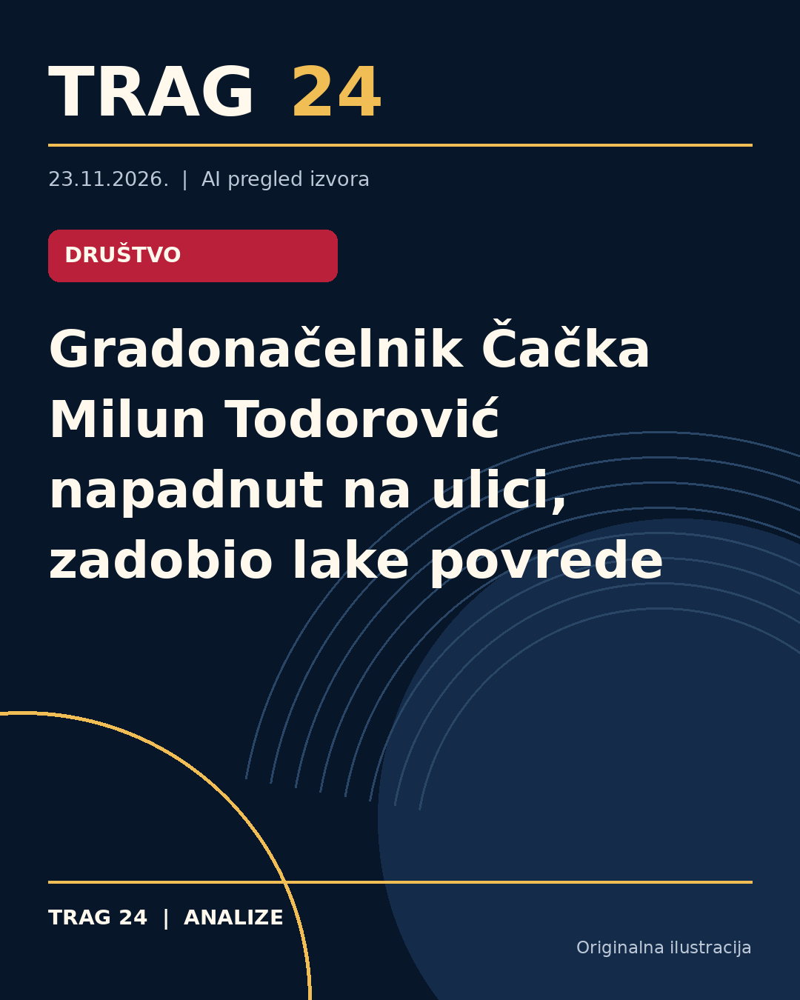

Gradonačelnik Čačka Milun Todorović napadnut na ulici, zadobio lake povrede

ŠTA SE DOGODILO
Gradonačelnik Čačka Milun Todorović povređen je danas nakon što ga je na ulici odgurnuo jedan muškarac, što je rezultiralo njegovim padom i zadobijanjem lakših telesnih povreda. Incident je prethodila rasprava koja je započela u obližnjem ugostiteljskom objektu, a potom se nastavila na ulici.
HRONOLOGIJA
Kako su naveli očevidci, tokom rasprave visok momak u pratnji jedne crne dame verbalno je napadao čoveka koji je nosio kačket, kasnije identifikovanog kao gradonačelnika Todorovića. U jednom trenutku, napadač ga je gurnuo, a onda su ga dvojica muškaraca podigli i uneli u dvorište njegove zgrade. Gradonačelnik je potom primljen na Urgentnu prijemnu službu u Opštoj bolnici Čačak, gde mu je utvrđeno da ima lake telesne povrede. Nakon pregleda, Todorović je pušten na kućno lečenje. Policija i tužilaštvo su izašli na lice mesta i razgovarali sa učesnicima incidenta, ali zasad nisu objavili saopštenja.
ŠTA NAVODE IZVORI
Očevidac navodi da tokom rasprave nije bilo govora o politici, već da se spor verovatno tiče starih neraščišćenih računa. Nezvanično, mediji saznaju da je napadač I. Đ., sportski radnik. Takođe, podseća se da je Todorović krajem jula 2025. godine imao blaži moždani udar o čemu postoje prethodne informacije i da se nakon toga nije vratio na posao u gradskoj upravi, iako je viđan u javnosti i na partijskim sednicama.
ŠTA JE POTVRĐENO
Potvrđeno je da je Milun Todorović fizički napadnut, da je tokom incidenta zadobio lake povrede i da je nakon pregleda u bolnici pušten na kućno lečenje. Razgovori policije i tužilaštva sa akterima incidenta su obavljeni. Povrede nisu ozbiljne niti su dodatno precizirane od strane medicinskih ustanova.
ŠTA NIJE POTVRĐENO
Nije potvrđeno šta je konkretno izazvalo spor između aktera incidenta, kao ni da li postoji bilo kakva politička pozadina. Zvanični podaci o identitetu napadača i motivima incidenta nisu saopšteni. Takođe, policija i tužilaštvo nisu izdale javno saopštenje sa detaljima istrage.
ŠTA OSTАJE OTVORENO: Ostaje nejasno da li će biti pokrenuta dalja istraga i koje će posledice imati ovaj događaj. Takođe, nepoznato je da li će ovaj incident imati uticaja na dalju karijeru i javni angažman Miluna Todorovića.
Izvori
- https://nova.rs/vesti/hronika/ozonpress-gradonacelnik-cacka-milun-todorovic-napadnut-na-ulici-primljen-u-bolnicu/
- https://www.danas.rs/vesti/politika/milun-todorovic-gradonacelnik-cacka-sukob-bolnica/
- https://www.euronews.rs/srbija/aktuelno/253360/gradonacelnik-cacka-milun-todorovic-fizicki-napadnut/vest
Ova analiza je pripremljena uz pomoć veštačke inteligencije na osnovu javno dostupnih izvora. Navodi izvora nisu nužno nezavisno potvrđeni.